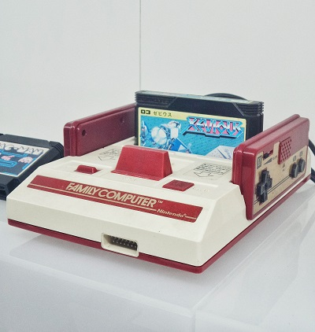
рассмотрим верстку
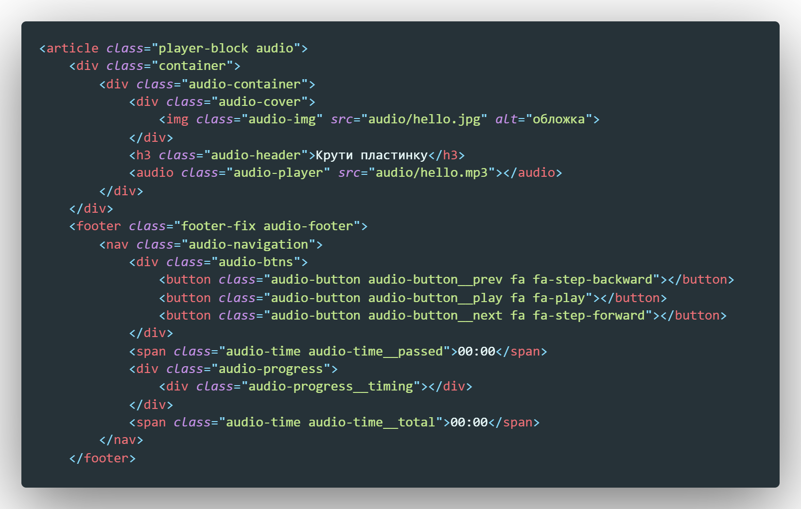Верстка состоит из двух частей. В верхней части у нас изображение трека, название трека и сам тег audio
В нижней части мы реализовали интерфейс управления воспроизведением. Тут есть кнопка play/pause, next, prew, два параграфа которые указывают на текущее и тотальное время трека. А так же самое интересное - полоса прокрутки. Эта полоса в этом случае не input type range, а влок div внутри которого другой блок с бэкграундом красного цвета. Ширина этого блока (внутреннего) будет соответствовать текущему времени трека.
По традиции начинаем с получения элементов DOM дерева
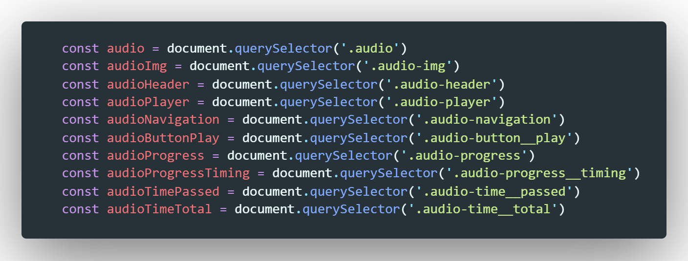Так как в примере мы не используем сервер с бэкэндом, который бы по запросу нам возвращал треки, мы создадим массив с названиями наших тректов
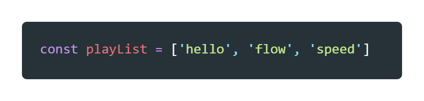Теперь создадим глобальную переменную, которая будет в себе хранить индекс текуего трека в массиве
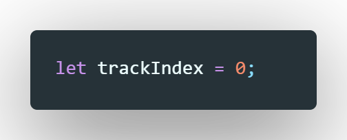Начнем с самой главной функции, которая отвечает за навигацию аудио-плеера (пауза/play, next, prew)
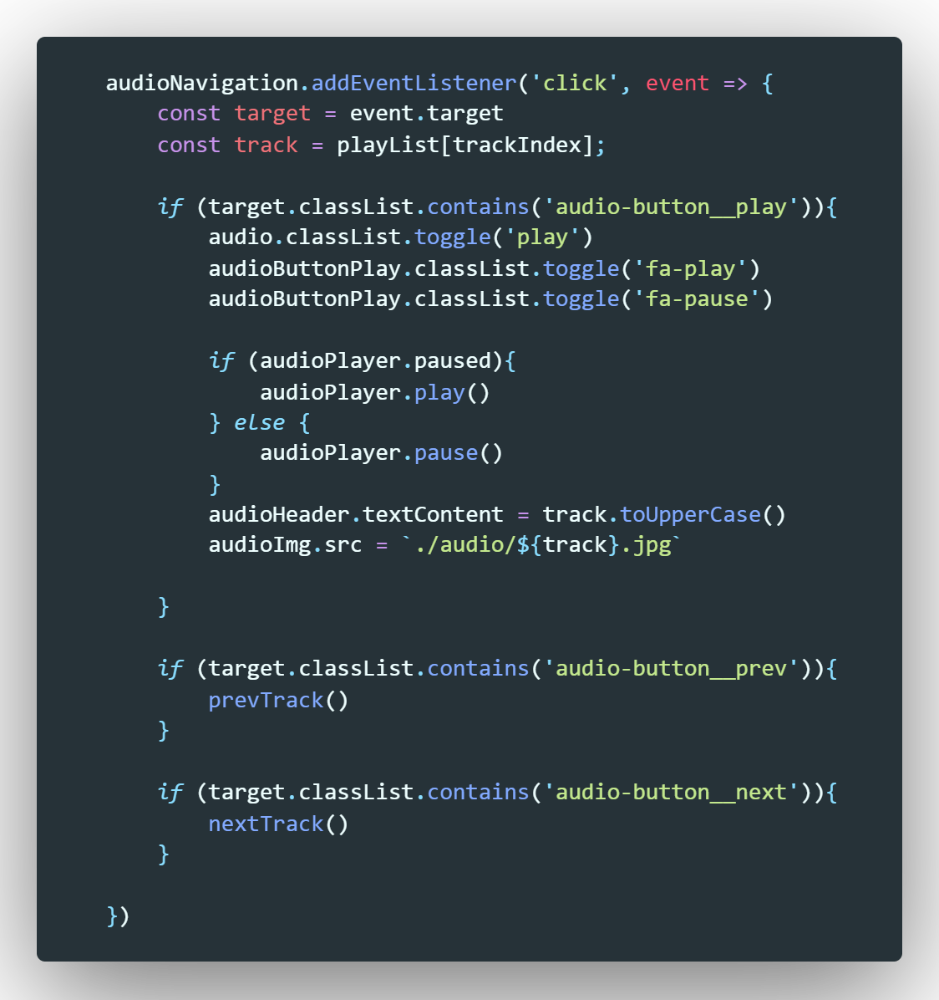На блок с навигацией мы вешаем слушатель события по клику. У callback функции есть входной параметр - event. Первое что мы делаем, это объявляем две переменные/ Первая с помощью оператора event мы получаем доступ до объекта по которому совершили клик. Вторая переменная получает значение текущего имени трека в массиве.
Дальше у нас идет условие - если класс элемента в таргете равен - audio-button__play, тогда мы с помоью метода toggle добавляем или удаляем классы компонентам.
Дальше внутри условия идет второе условие - если плеер на паузе - запускаем его, иначе останавливаем. И последнее что делается в первом условии это мы меняем на верхней части плеера картинку и название трека (трек пишем в uppercase)
Второе условие и третье одинаковые по назначению. Если нажали кнопку next запускаем функцию nextTrack(), если нажали кнопку prev, то запускаем функцию prevTrack()
Рассмотрим что делают эти функции. Начнем с nextTrack
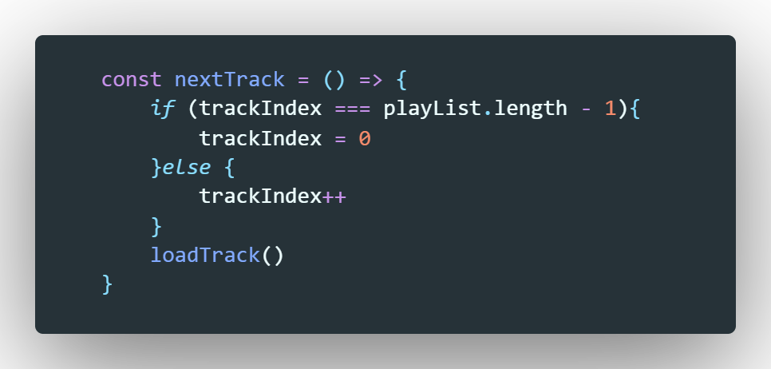Если глабальная переменная имеет значение равное длине массива треков минус 1, тогда присваиваем ей значение 0., иначе увеличиваем ее значение на 1. Дальше применяем функцию loadTrack()
Функция prevTrack делает обратную задачу. Если значение глобальной переменной не равно 0, то уменьшаем ее значение на 1, иначе присваиваем ей значение длины массива минус 1. И так же вызываем функцию loadTrack
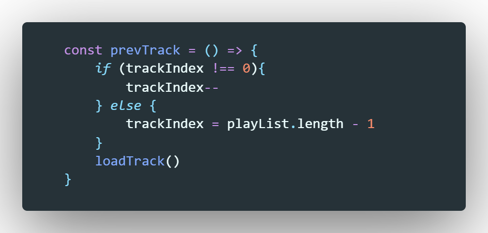Теперь рассмотрим что же делает функцию loadTrack
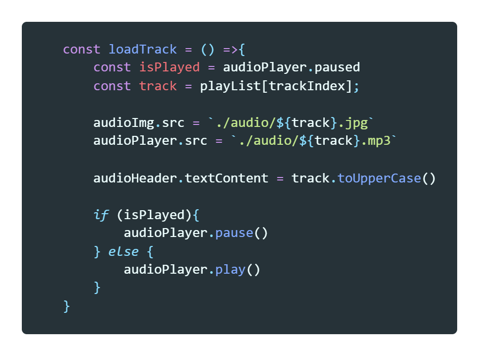Здесь мы создаем две переменные. В первую записываем булевое значение - на паузе ли наш плеер. Вторая переменная в себя включает имя текущего трека в массиве.
Дальше с помощью шаблонныз строк мы заполняем значения свойств src картинки превью и аудио-плеера. Далее заполняем название трека на превью
И дальше условие, если плеер был на паузе, оставляем его на паузе, если плеер играл, тогда пусть играет. Для чего так: это нужно что бы если плеер играет и мы нажали next то плеер тут же его будет проигрывать.
Рассмотрим следующую функцию
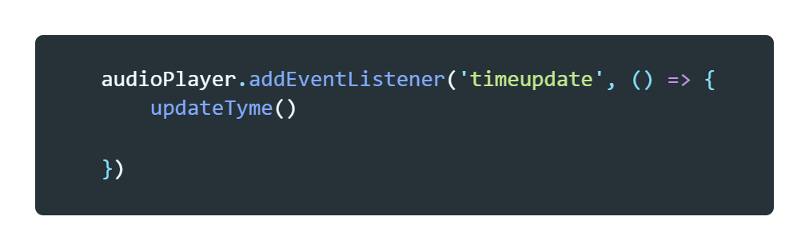На наш аудио-плеер мы повесили слушатель события timeupdate - это событие срабатывает во время проигрывания трека. Во время этого события мы запускаем функцию - updateTime(). Рассмотрим ее
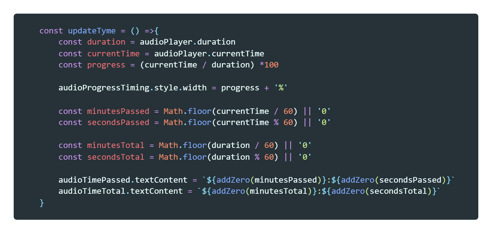Здесь ровно тоже самое что мы делали на видеоплеере. Получали значения текущего и тотального времени трека. получали прогресс с помощью деления текущего на тотальное и умножение на 100.
Здесь только разница что с помощью JS мы меняем свойство width у блока с красным фоном - присваиваем значение переменной progress и добавляем % что бы ширина была в процентах. Ну а дальше спомощью метода Math мы получаем округленные (floor) значения секунд и минут тотального и текущего времени. После чего с помощью шаблонных строк заполняем тег p (параграф который отвечает за отображение времени)
функция addZero делат тоже самое что и в видео, она добавляет 0 если секунд или минут меньше 10. что бы время было в формате 00:00
Почему мы вынесли этот код в отдельную функцию? все просто эту же функцию мы вызовем во время события у плеера которое называется - canplay
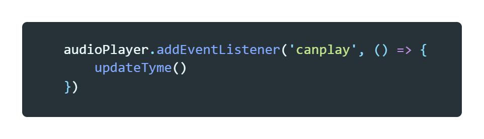Что это за событие? оно срабатывает тогда когда плеер готов что-то воспроизвести. Зачем мы это делаем?. Дело в том что если остановить плеер и просто полистать треки, то в теги в которых отображается тотальное время не отображается всемя трека (там просто нули). Для этого мы вызываем функцию обновления времени при событии когда трек готов
Теперь рассмотрим что будет происходить когда трек закончится
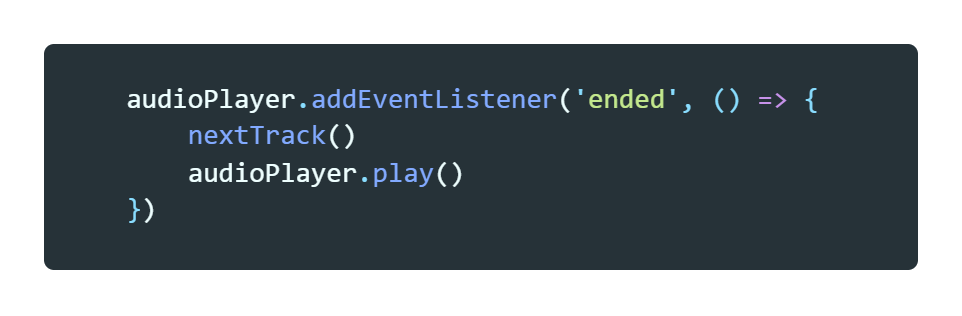Будет запущена функцию nextTrack и плеер запустится.
Последнее что мы разберем это как перематывать видео
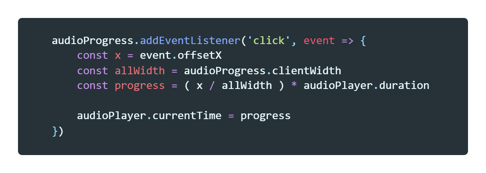Вешаем слушатель события клик на блок отвечающий за шкалу трека. Callback функция принимает event
Далее мы объявляем переменную X в которую записываем значение в пикселях рассточние от левой границы блока до места клика.
Далее объявляем переменную в которую записываем текущую ширину блока audioProgress (clientWidth - позволяет получать текущее значение ширины т.к оно может меняться в зависимости от ширины экрана устройства, т.е приложение адаптивно)
Далее мы объявляем переменную куда записываем результат выражения и этот результат передаем в свойство currentTime нашему плееру.